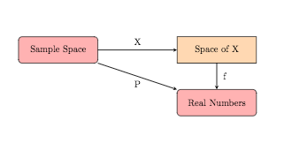

Section4.5Random Variables
For a given set of events, we might have difficulty doing mathematics since the outcomes
are not numerical. In order to accomodate our desire to convert to numerical measures we want
to assign numerical values to all outcomes. The process of doing this creates what is known as a random
variable.
Definition4.5.1Random Variable
Given a random experiment with sample space S, a function X mapping each
element of S to a unique real number is called a random variable.
For each element s from the sample space S, denote this function by
X(s) = x
and call the range of X the space of X: R={ x : X(s)=x, for some s in S}
We will make various restrictions on the range of the random variable to fit different
generalized problems. Then, we will be able to work on a problem (which may be
inherently non-numerical) by using the random variable in subsequent calculations.
When dealing with only two outcomes, one might use S = { success, failure}.
Choose X(success)=1, X(failure)=0. Then, R={0,1}.
When gambling with a pair of dice, one might use
S=ordered pairs of all possible rolls = {(a,b): a=die 1 outcome, b=die 2 outcome}.
Choose X( (a,b) ) = a+b. Then, R={2, 3, 4, 5, ..., 12}.
When rolling dice in a board game (like RISK), one might use
S={(a,b): a=die 1 outcome, b=die 2 outcome}
Choose X( (a,b) ) = max{a,b}. Then, R={1, 2, 3, 4, 5, 6}
Definition4.5.5
R contains a countable number of points if either R is finite or there
is a one to one correspondence between R and the positive integers.
Such a set will be called discrete. We will see that often the set R is not countable.
If R consists of an interval of points (or a union of intervals),
then we call X a continuous random variable.
